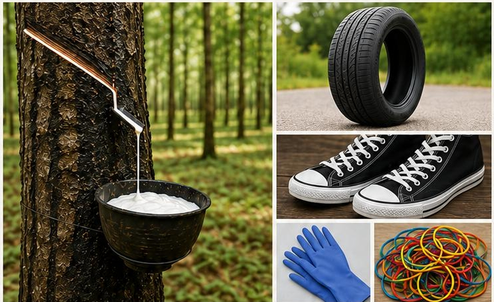

Thiago • Grade 4 • Miss Milagros • Term 2 · 2026
Click on each topic to open it. Read carefully — there are examples to help you understand. When you're ready, go to the practice tabs! 💪
Tom Briggs spent six months carefully growing the enormous vegetable. The pumpkin measures over one metre in height.
A newspaper report has: headline, subheading, byline, facts, quotations, and photos with captions.

Every day, millions of people use products made from rubber. From the tyres on our cars to the gloves doctors wear, rubber plays an important role in our lives. But have you ever wondered where rubber comes from and how it connects people around the world?
From Tree to Product
Natural rubber comes from the latex of rubber trees. Farmers carefully collect the latex by making a small cut in the tree bark. The liquid is then collected in cups. The latex is cleaned, mixed and processed into rubber. Major rubber-producing countries include Thailand, Indonesia, Vietnam, India and Malaysia.
Rubber is used to make many items we use every day. These include tyres, shoes, gloves, playground surfaces, sports equipment and medical supplies.
Experts report that recycling rubber products can reduce waste and protect the environment. Old tyres can be reused to make playground floors, sports tracks and roads.
Replace the highlighted word with the best, most precise alternative.
The text below has many overused words (in red). Rewrite it using better vocabulary, then check your answer!
Different readers need different language. Match each message to the right audience.
Choose an audience and write a short message about this situation: